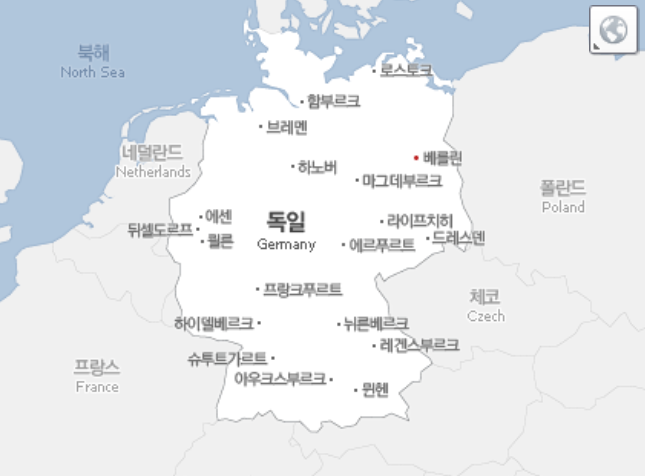
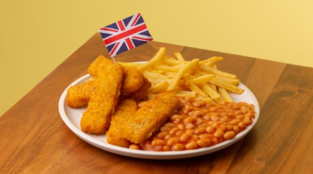

홈으로
홈으로
Young's House
Young's House
당신이 가고 싶은 나라는?
-독일편-
위치
여행 Point
♥랜드마크♥_런던 타워 브릿지
여행 V-Log
|  |
 |
♥대표음식♥_피쉬 앤 칩스
|  |
| 옛날 영국 서민들이 음식을 빨리 한번에 많이 만들기 위해 모든 음식을 튀겨버리과정에서 탄생한 영국대표음식 |
• 출처: Youtube 채널_나니의 젊은이 일기 •